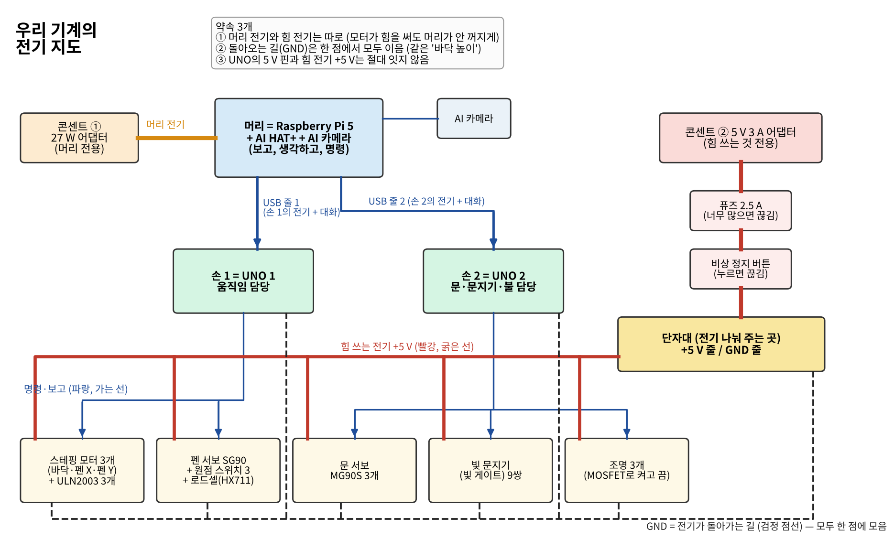
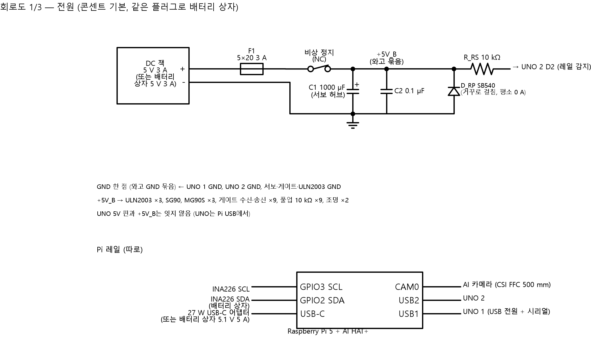
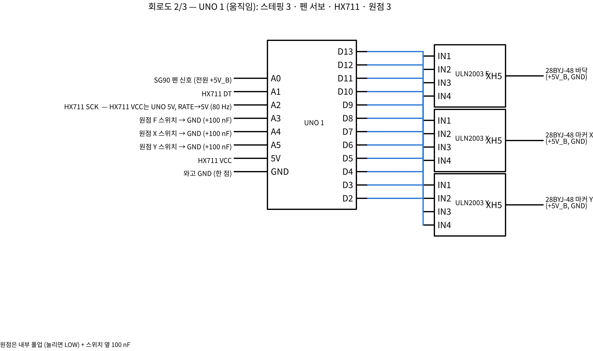
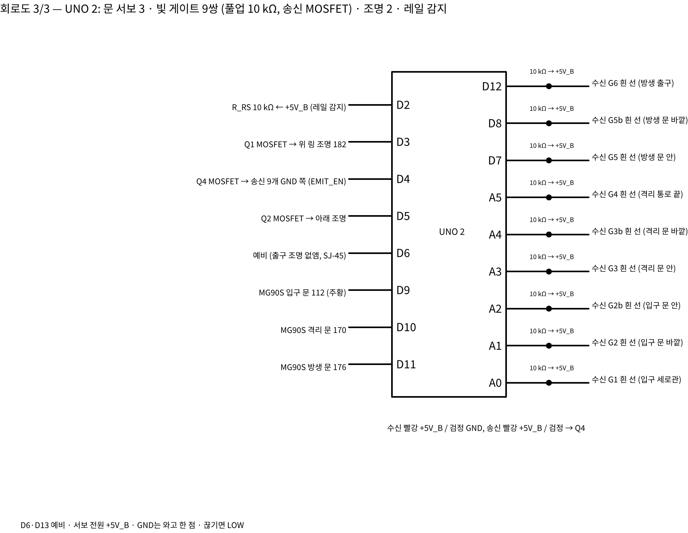
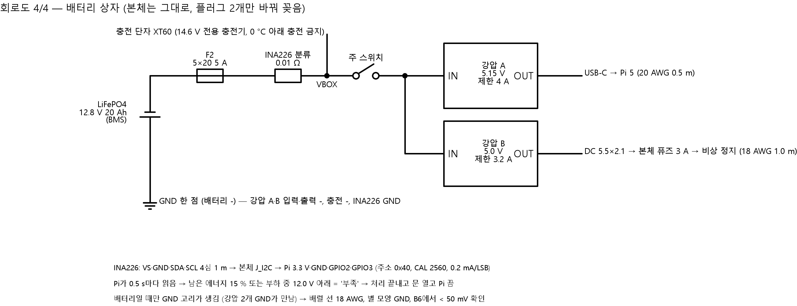
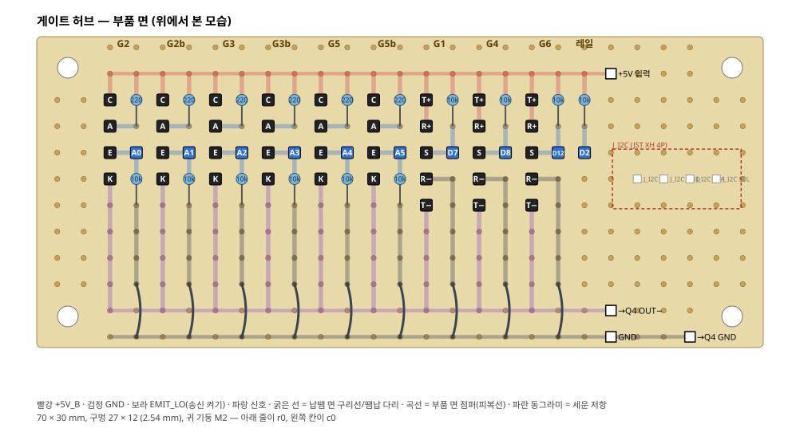
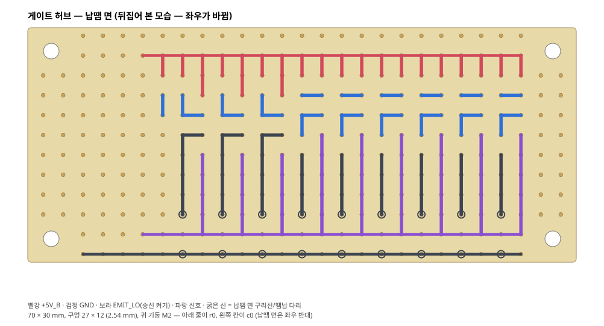
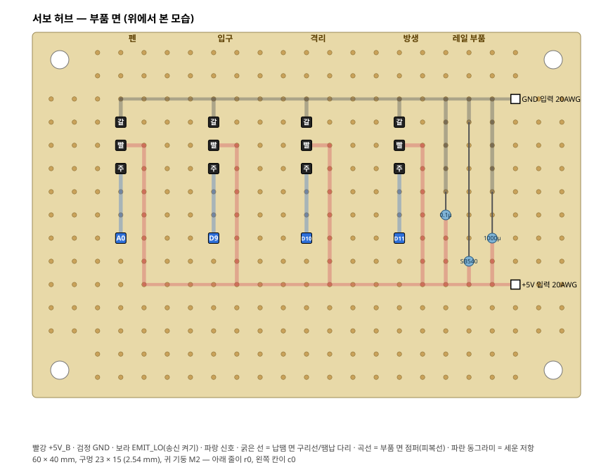
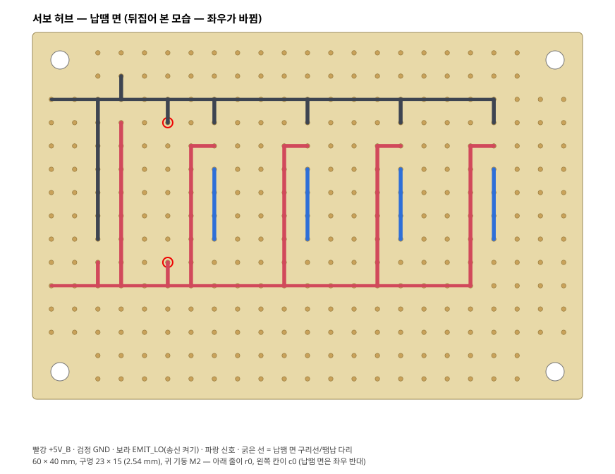

서현 PC · 2026-11-08 · Claude (CAP-AI-49·50) · 원본 회로는 design/circuit/circuit.py
말벌 기계의 전기회로
— 처음부터 차근차근
이 기계가 전기를 어떻게 쓰는지, 왜 그렇게 정했는지, 이제 무엇을 어떤 순서로 만들면 되는지 설명해요. 전기를 처음 배우는 사람도 읽을 수 있게 썼어요.
표시: 확실 계산이나 사양서로 확인한 것 · 가능성 높음 거의 맞지만 실물로 볼 것 · 추측 아직 모르는 것
1. 전기는 물과 같아요
전기는 눈에 안 보여서 어려워요. 그래서 물이 흐르는 관으로 생각해요.
| 전기 말 | 물로 생각하면 | 우리 기계에서 |
|---|---|---|
| 전압 (V, 볼트) | 물탱크의 높이. 높을수록 세게 밀어요 | 거의 모든 부품이 5 V를 써요 |
| 전류 (A, 암페어) | 관으로 흐르는 물의 양 | 평소 0.34 A, 많이 쓸 때 1.8 A |
| 저항 (Ω, 옴) | 관이 좁아지는 곳. 물이 덜 흘러요 | 10 kΩ 저항으로 신호 선을 "살짝" 올려 둬요 |
| GND (그라운드) | 물이 다 흐르고 돌아오는 바다 | 모든 부품의 GND는 한 점(와고)에 모여요 |
| 퓨즈 | 물이 너무 많이 흐르면 스스로 끊어지는 수도꼭지 | 3 A 퓨즈 |
2. 기계의 몸 지도
우리 기계를 사람 몸에 비유해요.
3. 전기가 다니는 두 개의 길
기계에는 전기 길이 두 개 있어요. 섞지 않는 게 아주 중요해요.
- UNO의 5V 핀은 힘 길(+5V_B)과 잇지 않아요. UNO는 Pi의 USB로만 전기를 받아요.
- GND는 모두 와고 한 점에 모아요. 바다가 여러 개면 신호가 헷갈려요.
- 저울(HX711)만은 예외로 UNO 5V에서 전기를 받아요. 저울은 아주 작은 차이를 재서 조용한 전기가 필요하기 때문이에요.
4. 안전장치 세 가지
① 퓨즈 3 A
물이 너무 많이 흐르면(선이 붙어 버리는 '합선'이 생기면) 퓨즈 안의 가는 선이 녹아서 끊어져요. 집에 불이 나지 않게 해요.
원래는 2.5 A 지연형을 쓰려 했지만 국내에서 못 찾아서 5×20 mm 3 A를 써요. 어댑터가 3 A라서 괜찮아요 가능성 높음.
② 비상 정지 버튼
빨간 버튼을 누르면 힘 길만 끊겨요. 모터와 서보가 바로 힘이 빠져요. 뇌(Pi)는 계속 켜져 있어서 무슨 일이 있었는지 기억해요.
손 2가 D2 핀으로 "힘 전기가 들어오나?"를 계속 봐요. 끊기면 뇌에게 EVT RAIL 0이라고 말하고, 뇌는 손 1에게 "멈춰(STOP)"라고 해요. 버튼을 풀면 원점부터 다시 찾아요.
③ 서보는 한 번에 하나
서보 4개가 한꺼번에 움직이기 시작하면 순간 3.27 A가 필요해요. 퓨즈 3 A보다 커요 확실 — 계산.
그래서 펌웨어가 켤 때 서보를 붙이지 않고, 붙일 때는 0.3초 간격으로 하나씩만 붙여요. 서보 하나씩이면 최대 1.8 A예요.
(덤) 지켜보는 개
뇌가 멈추면 손들이 5초 뒤 알아채요("WATCHDOG"). 닫히던 문은 다시 열고, 펜은 들어 올려요. 말벌이 다치지 않게요.
뇌는 할 일이 없을 때도 1초마다 "PING"이라고 말해서 살아 있다고 알려 줘요.
5. 손 1 (UNO 1) — 움직이는 손
핀(pin)은 아두이노 옆에 있는 작은 구멍이에요. 선을 꽂아서 부품과 이야기해요.
| 핀 | 무엇과 이어지나 | 쉽게 말하면 |
|---|---|---|
| D2 ~ D5 | 바닥 F 모터 드라이버 (ULN2003) | 바닥을 위아래로. 4개 선을 차례로 켜면 모터가 한 칸씩 돌아요 |
| D6 ~ D9 | 마커 X 모터 | 펜을 왼쪽·오른쪽으로 |
| D10 ~ D13 | 마커 Y 모터 | 펜을 앞·뒤로 |
| A0 | 펜 서보 SG90 | 펜을 들고 내려요. 내릴 때 마지막엔 천천히 (초당 60° 이하) |
| A1 / A2 | 저울 HX711 (DT / SCK) | 바닥이 말벌을 얼마나 세게 누르나 (0.5 N ≈ 51 g에서 멈춤) |
| A3 / A4 / A5 | 원점 스위치 F / X / Y | "여기가 끝!" 하고 알려 주는 작은 단추 |
- 펜이 내려가 있으면 X·Y로 안 움직여요 (펜이 끌리지 않게).
- 펜이 말벌 위에 내려가 있으면 바닥을 올리지 않아요 (말벌이 눌리지 않게). 펜이 대기 자리 컵에 꽂혀 있으면 올려도 돼요.
- 모터가 멈추면 전기를 꺼요(HOLD 0). 기어가 단단해서 바닥이 저절로 내려오지 않아요 (힘의 92배 이상) 확실 — 계산.
6. 손 2 (UNO 2) — 문과 문지기
| 핀 | 무엇과 이어지나 | 쉽게 말하면 |
|---|---|---|
| D2 | 힘 전기 감시 (10 kΩ ← +5V_B) | 비상 정지가 눌렸나? 눌리면 LOW |
| D3 / D5 | 위 조명 / 아래 조명 (MOSFET 스위치) | 밝기를 0~255로 조절 |
| D4 | 송신 켜기 (MOSFET Q4) | 문지기 9쌍의 "빛 쏘는 쪽"을 한꺼번에 켜고 꺼요 |
| D7 / D8 / D12 | 통로 문지기 G1 / G4 / G6 | 입구 관 · 격리 통로 끝 · 방생 출구 |
| D9 / D10 / D11 | 문 서보 입구 / 격리 / 방생 | 미닫이문을 열고 닫아요 |
| A0 ~ A5 | 문 빔 6개 (문마다 앞·뒤 2개) | 문틈에 말벌이 있나? (빛 세기를 숫자로 읽어요) |
| D6, D13 | (비어 있음) | 나중에 센서를 더 달 자리 |
7. 빛 게이트(문지기)와 자가 시험
한쪽에서 눈에 안 보이는 빛(적외선)을 쏘고, 반대쪽에서 받아요. 말벌이 지나가면 빛이 가려져서 "누가 지나갔다!"를 알아요. 엘리베이터 문의 센서와 같아요.
- 켰을 때 숫자 − 껐을 때 숫자가 200보다 작으면 고장(FAIL)이에요. 햇빛이 너무 들어오거나, LED 방향이 틀렸거나, 선이 빠진 거예요.
- 문턱값(가려졌다고 볼 기준)은 그 두 숫자의 가운데로 자동으로 정해요. 그래서 기계마다 손으로 맞출 필요가 없어요.
- 입구 문지기 G1이 고장이면 기계를 아예 시작하지 않아요. 말벌이 들어와도 모르기 때문이에요.
- 문 빔이 고장이면 10초 뒤 한 번 더 시험해요. 켤 때 마침 말벌이 빔 사이에 있었을 수도 있으니까요. 그래도 고장이면 그 문은 쓰지 않아요.
문 빔은 문 사이 틈이 5 mm뿐이라, 큰 완제품(Adafruit 2167, 20 × 10 × 8 mm)이 안 들어가요. 그래서 3 mm 작은 LED와 포토트랜지스터를 낱개로 써요 확실 — 승준 CAD. 통로 3곳은 완제품을 써요.
8. 문 닫기 규칙 (끼임 방지)
문 서보는 꽤 세서, 말벌이 끼면 22~44 N으로 밀어요 확실 — 역학계산 M7. 말벌이 다쳐요. 그래서 문마다 빔 2개(문 앞·뒤)를 달고 이렇게 닫아요.
- 문틈의 빔 2개가 0.2초 동안 계속 비어 있어야 닫기 시작해요.
- 2초가 지나도 비지 않으면 닫지 않고 "기다리다 그만(WAIT)"이라고 알려 줘요.
- 닫는 도중 빔이 가려지면 바로 다시 열어요 (REOPEN).
- 세 번 다 실패하면 "막혔어요(BLOCKED)" — 문을 열어 둔 채 뇌에게 맡겨요.
- 뇌는 5초 쉬었다가 다시 시켜요. 이렇게 세 번(모두 9번)까지 해도 안 되면 사람에게 알려요.
8-1. 눈 — 카메라는 무엇을, 어떻게 잇나
| 궁금한 것 | 답 | 근거 |
|---|---|---|
| 어떤 제품? | Raspberry Pi AI 카메라 (IMX500) — 보유 1대, 새로 안 사요 | 확실 보유 목록 |
| 뭐가 특별해요? | 카메라 안에 작은 AI 두뇌가 있어서 "말벌이 어디 있나"를 카메라가 직접 찾아요. 뇌(Pi)는 덜 바빠져요 | 제조사 사양 |
| 어디에 달아요? | 마킹실 격자 위 200 mm, 아래를 봄. 렌즈 둘레에 위 링 조명(손 2의 D3) | 인터페이스 정의서 |
| 왜 200 mm? | 초점이 20 cm보다 가까우면 흐려져요. 손으로 돌려 맞추는 수동 초점이라 200 mm에 한 번 맞춰 두고 고정해요 | 확실 제조사 사양 (20 cm~무한대) |
| 얼마나 넓게·자세히? | 보이는 넓이 약 260 × 196 mm 중 마킹실 40 × 40 mm만 써요. 1 mm에 약 15.6 화소 (화소 하나 ≈ 0.064 mm) | 계산값 실측은 J3 |
| 어떻게 이어요? | 납작한 리본 케이블(FFC) 하나: Pi 5 CAM0 (22핀, 0.5 mm 간격) ↔ 카메라 (15핀, 1 mm 간격). 이 선 하나로 전기도 받고 사진도 보내요 — 따로 전원 선 없음 | 확실 circuit.py CSI |
| 케이블 길이? | 500 mm를 새로 사요. Pi 자리에서 카메라까지 약 320 mm인데, 같이 온 선은 300 mm라 모자라요 | 확실 — 계산 구매표 E18 |
| 전기 얼마나? | AI가 돌 때 약 1.9 W — Pi의 27 W 충전기 길에서 받아요 (힘 길과 상관없음) | 가능성 높음 측정 기사 |
- Pi 전원을 뺀 상태에서 해요.
- CAM0 구멍의 검은 잠금 막대를 살짝 들어 올려요.
- 리본의 넓은 쪽(15핀)은 카메라, 좁은 쪽(22핀)은 Pi예요. 금속 접점이 어느 쪽을 보게 꽂는지는 카메라 설명서 그림대로 해요 (거꾸로 꽂으면 카메라가 안 잡혀요).
- 끝까지 밀어 넣고 잠금 막대를 내려요. 리본은 날카롭게 접지 않고 둥글게 돌려요.
- 켜서 Pi에서 카메라 목록 명령으로 잡히는지 확인해요 (승준 J3 단계).
- 카메라 안 AI: 마킹실에 말벌이 있나, 어디 있나 찾기
- Pi 5 + AI HAT+: 원래 크기 사진 조각으로 등 무늬·여왕벌 폭(4.4 mm) 재기 가능성 높음 — 승준 확인
- Pi 코드(
관련코딩저장/pi_link/process.py): 그 결과로 "마킹 / 재방문 / 격리"를 정해요. 카메라 결과는종, 폭(mm), 표식 있나, 자세, 흉부 x·y형식으로 받기로 했어요 — 비전 코드(승준)와 맞춰야 해요
- 말벌 찾는 AI(VespAI, YOLOv5)를 카메라 안(IMX500)으로 옮길 수 있는지 미검증
- 200 mm에서 4.4 mm와 4.5 mm를 가를 만큼 정확한지 — 화소 하나가 0.064 mm라 될 것 같지만 실제 흔들림(σ)은 재 봐야 해요
- 격자판이 말벌을 가려요 (열린 면적 36.5 %) → 투명 격자를 권했어요 (11/02)
9. 진짜 회로도 보기
아래는 실제 회로도예요(design/img/circuit/). 레포 폴더 안에서 이 파일을 열어야 그림이 보여요.
읽는 법: 빨간 선은 +5 V, 검은 선은 GND예요. 파란 이름표가 같은 선끼리는 이어져 있다는 뜻이에요 (예: F_IN1이 두 군데 있으면 그 둘은 한 선).





※ 회로도 1·4장 그림에는 아직 역극성 다이오드(D_RP)가 안 그려져 있고, 카메라 선이 "300 mm"로 적혀 있어요. 원본(circuit.py)은 고쳤고, 그림은 다음에 다시 그려요 (이 PC에 그림 도구가 없음).
9-1. 허브 기판 — 납땜 지도
허브는 "선이 모이는 작은 판"이에요. 서보 4개, 문지기 9쌍의 선이 각각 아두이노까지 따로 가면 너무 복잡해서, 판 하나에 모아 전기를 나눠 주고 저항을 달아요. 판은 구멍이 2.54 mm마다 뚫린 만능기판이에요.
- 땜납 다리: 뒷면(납땜 면)에서 바로 옆 구멍끼리 땜납으로 이어요. 그림의 짧은 굵은 선.
- 버스: 한 줄을 따라 맨 구리선을 깔아요. +5V(빨강), GND(검정), 송신 켜기 EMIT_LO(보라) 세 줄.
- 점퍼: 앞면(부품 면)에서 피복선으로 버스를 넘어갈 때만 써요. 그림의 곡선. 게이트 허브에 9개, 서보 허브에 0개.
이 배치는 손으로 그린 게 아니라 전기회로/hub_boards.py가 만들고, 회로 원본(circuit.py)과 연결이 하나하나 같은지(합선 0, 끊김 0) 검사해요. 일부러 합선·끊김·핀 잘못을 넣어 보니 다 잡았어요 확실 — 검사 스크립트.
게이트 허브 (70 × 30 mm) — 문지기 9쌍 + 레일 감지
칸마다 위 글자가 문지기 이름이에요. 검은 네모 = 문지기 쪽 선이 꽂히는 핀, 파란 네모 = 아두이노(손 2)로 가는 신호 핀, 하늘색 동그라미 = 세워 꽂는 저항(220 = 220 Ω, 10k = 10 kΩ).
문 빔 핀 글자: C 받는 쪽 컬렉터 · A LED 긴 다리 · E 받는 쪽 이미터(신호) · K LED 짧은 다리.
통로 게이트: T+ T− 쏘는 쪽 빨강·검정 · R+ R− 받는 쪽 빨강·검정 · S 받는 쪽 흰 선(신호).


서보 허브 (60 × 40 mm) — 서보 4개 + 레일 부품
서보 커넥터는 갈색(GND)·빨강(+5V)·주황(신호) 순서. 오른쪽에 큰 콘덴서 C1(1000 µF, 긴 다리 +), 작은 콘덴서 C2(0.1 µF), 역극성 다이오드 D_RP(줄 표시가 +5V 쪽)를 달아요.


핀 하나하나의 이름과 회로 노드 표: 전기회로/out/hub_pinout.md
9-2. 역극성 보호 — 거꾸로 꽂아도 안전하게
건전지를 반대로 넣으면 장난감이 고장 날 수 있죠? 어댑터 플러그에도 +와 −가 정해져 있어요(보통 가운데가 +). 극성이 반대인 어댑터를 실수로 꽂으면 전기가 거꾸로 흘러서 서보·센서·아두이노가 한꺼번에 상할 수 있어요.
- 다이오드는 전기를 한쪽으로만 보내는 문이에요.
- +5V와 GND 사이에 거꾸로 걸쳐 둬요. 평소(바르게 꽂음)에는 문이 닫혀 있어서 아무 일도 안 해요 → 전압이 하나도 안 떨어져요.
- 거꾸로 꽂으면 문이 열려서 전기가 다이오드로 와르르 흘러요 → 퓨즈 3 A가 툭 끊어져요. 부품에는 −0.5 V 정도만 걸려서 안전해요. 퓨즈만 새로 갈면 돼요.
- 안 쓴 방법: 다이오드를 길 중간에 넣으면 늘 0.3~0.5 V가 떨어져서, 문 서보(4.8 V 이상 필요)가 힘이 모자랄 수 있어요.
- 부품: 쇼트키 다이오드 SB540 (5 A) 1개, 서보 허브에 줄 표시가 +5V 쪽으로 가능성 높음 — 사기 전에 사양서 확인
10. 이제 만드는 순서 (체크리스트)
레고를 만들 때 설명서 1번부터 하나씩 하듯이 해요. 한 단계가 "통과"해야 다음으로 가요. 안 되면 그 단계 안에서만 찾으면 되니까 쉬워요. 칸을 누르면 이 컴퓨터에 기억돼요.
각 단계를 자세히 보려면: design/2026-11-06_브레드보드_단계별_배선_서현.md
11. 자주 하는 실수
| 실수 | 무슨 일이 생기나 | 막는 법 |
|---|---|---|
| UNO 5V 핀을 +5V_B에 이음 | 서보가 움직일 때 UNO가 다시 켜지거나 USB가 상함 | UNO 5V는 저울(HX711)에만 |
| GND를 안 이음 | 신호가 엉망 (명령은 갔는데 서보가 떨림) | 모든 GND를 와고 한 점으로 |
| D2에 내부 풀업을 켬 | 비상 정지를 눌러도 "힘 있음"으로 읽힘 | 펌웨어가 INPUT으로 둠 — 바꾸지 않기 |
| 한꺼번에 다 꽂고 켬 | 안 될 때 어디가 문제인지 모름 | E2 → E10 순서대로 |
| IR LED 다리(+/−)를 거꾸로 | 자가 시험 FAIL (빛이 안 나옴) | 긴 다리가 + (애노드) |
| 햇빛 드는 곳에서 시험 | 껐는데도 숫자가 높아 FAIL | 그늘에서 시험, FAIL이면 차이 숫자를 보고 판단 |
| 모터 커넥터를 다른 축에 꽂음 | X를 시켰는데 Y가 움직임 | 꼬리표 (하네스표 번호) |
12. 아직 모르는 것 · 정할 것
11/08에 설계한 것 (전에는 없었음)
- 허브 기판 배치도 → 9-1장 (검사 통과)
- 역극성 보호 → 9-2장 (SB540, 서보 허브)
정할 때가 오면
- 부품 주문은 CAD가 끝난 뒤에 해요 (서현 11/08).
실물이 와야 아는 숫자 (미검증)
- 문 열림·닫힘 각도 (지금은 30° / 150°), 닫는 속도 (초당 100°)
- 펜 위·아래 각도, 천천히 내리기 시작하는 각도
- 문 빔 숫자 차이 — 200 이상 나올지 추측: 1 V 넘게 날 것
- MOSFET 모듈 실제 핀 이름, 조명 실제 전류, 로드셀 선 색
- 대기 자리 X 위치 (+10 mm?) — CAD에서 재기로 함
13. 단어장
- 아두이노 UNO
- 작은 컴퓨터. 핀으로 부품을 켜고 끄고 읽어요. 우리는 2개(손 1, 손 2).
- Raspberry Pi 5
- 더 큰 컴퓨터(뇌). 카메라로 보고 판단해서 UNO에게 글자로 명령해요.
- 펌웨어
- UNO 안에 넣는 프로그램. trap_motion, trap_doors.
- 스테핑 모터 (28BYJ-48)
- 한 칸씩 정확하게 도는 모터. 반 칸 4,076번이면 한 바퀴.
- ULN2003
- UNO의 약한 신호를 모터용 센 전기로 바꿔 주는 판.
- 서보 (SG90, MG90S)
- 각도를 말하면 그 각도로 가는 모터. 펜과 문에 써요.
- 로드셀 + HX711
- 저울. 로드셀이 아주 조금 휘면 HX711이 그것을 숫자로 바꿔요.
- 원점 스위치
- 축 끝에 있는 단추. "여기가 0"을 알려 줘요.
- 빛 게이트
- 적외선 빛을 쏘고 받는 한 쌍. 가려지면 누가 지나간 거예요.
- MOSFET
- 전기로 누르는 스위치. 약한 핀으로 센 전기를 켜고 꺼요.
- 풀업 / 풀다운 저항
- 아무것도 안 꽂힌 신호 선이 둥둥 떠서 헷갈리지 않게, 살짝 HIGH(또는 LOW)로 당겨 두는 저항.
- 와고 (221-415)
- 레버를 올리고 선을 꽂는 연결 단자. 나사 없이 선을 여러 개 이어요.
- 하네스
- 미리 길이를 맞춰 자르고 꼬리표를 붙인 선 묶음.
- HIGH / LOW
- 핀의 상태. HIGH는 전기 있음(5 V), LOW는 없음(0 V).
14. 파일은 어디에?
| 알고 싶은 것 | 파일 |
|---|---|
| 이 정리 (순서·남은 것) | 전기회로/README.md |
| 회로 전체 · 핀표 · 넷리스트 | design/2026-11-06_회로설계_서현.md |
| 회로의 원본 코드 | design/circuit/circuit.py |
| 살 것 | design/2026-11-06_전기부품_구매확정표_서현.md |
| 하나씩 꽂기 (B1~B5) | design/2026-11-06_브레드보드_단계별_배선_서현.md |
| 선 하나하나 | design/2026-11-06_하네스표_서현.md |
| 배터리 상자 | design/2026-11-06_배터리상자_회로_서현.md |
| 펌웨어 | design/circuit/firmware/ |
| 시뮬레이터 · Pi 코드 | 관련코딩저장/ |